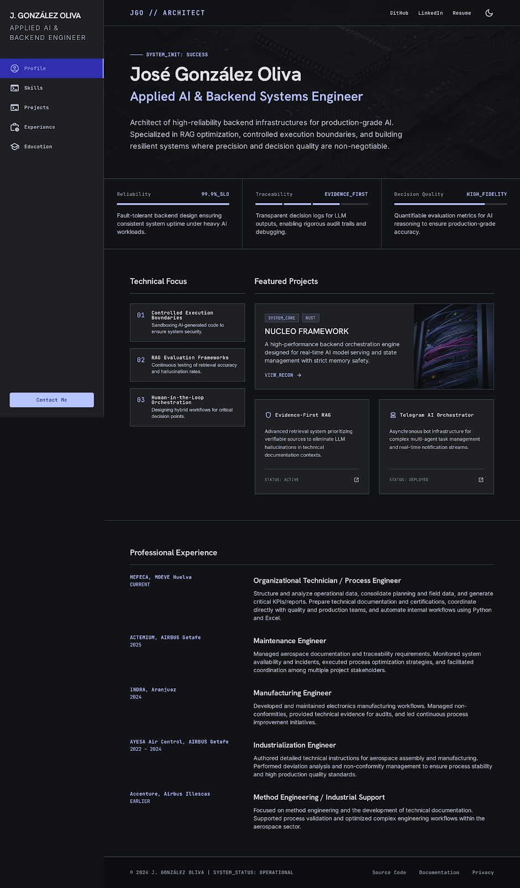

Fault-tolerant thinking for backend services supporting AI workloads.
SYSTEM_INIT: CV_PORTFOLIO_READY
Applied AI & Backend Systems Engineer
I build reliable backend foundations for AI workflows: RAG evaluation, controlled execution boundaries, automation, observability and traceable technical decision-making.

Decision logs, synthetic traces and verifiable documentation flows.
Evaluation-oriented work for reducing hallucinations and ambiguity.
TECHNICAL FOCUS
Navigate by related topic
Use these topic chips as a map. They jump between pages and anchor the CV around the same engineering themes.
PROFILE
Engineering profile
Backend and AI-oriented engineer with industrial, aerospace and manufacturing experience. The portfolio frames private or local work as curated public evidence: static demos, safe synthetic examples and transparent limitations.
roleApplied AI & Backend Systems Engineer
corePython · FastAPI · Java · Spring Boot · PostgreSQL
aiRAG · LLM evaluation · Vector databases · Ollama
domainAerospace · Manufacturing · Process engineering
statusOpen to backend / applied AI roles
FAST PATH
Three-page CV structure
01
Overview
Positioning, focus areas and a topic-based map for recruiters and technical reviewers.
02Experience
Professional timeline, education, skills and the bridge between industrial systems and software practice.
03Projects
NUCLEO, Evidence-First RAG, Telegram AI Orchestrator, automation and LLM Lab.